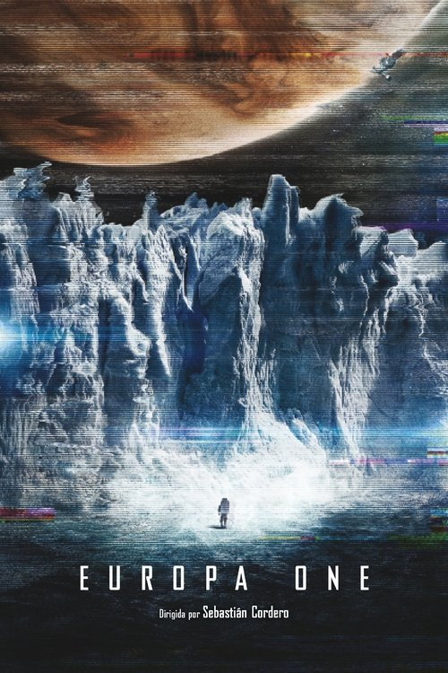

Ciencia Ficción de Terror: 5 Películas que Mezclan lo Mejor de Dos Mundos
El terror llega desde el espacio. Vive la tensión de estas 5 películas que combinan ciencia ficción y terror.
- Europa One (2013)
Una misión espacial privada a Júpiter se convierte en una lucha por la supervivencia cuando la tripulación se enfrenta a lo desconocido y a las limitaciones de su tecnología.